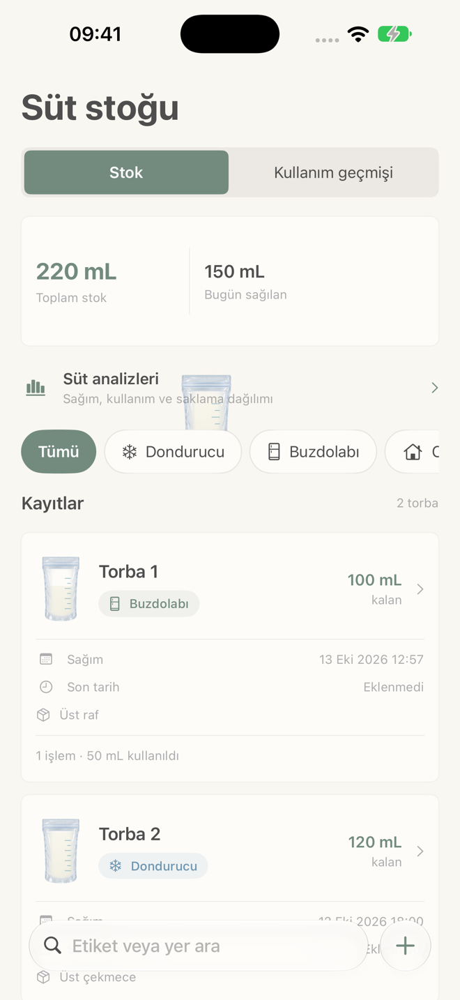

SÜT STOĞU
Sağımı, stoğu
ve kullanımı izleyin.
Süt torbalarının miktarını, sağım zamanını ve saklama yerini kaydedin. Kullanılan veya imha edilen miktarı işaretleyin; kalan stoğu görün.
- Saklama yerine göre stok
- Kullanım geçmişi ve belirlediğiniz son tarih için hatırlatma
- Premium ile sağım ve kullanım analizleri
